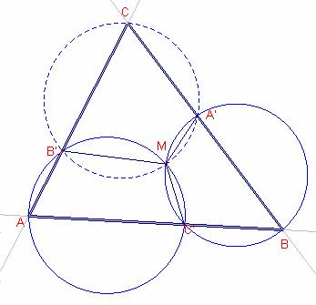

Problema
294
Donat
un triangle  i tres punts A’, B’,
C’ sobre els costats , respectivament, les circumferències circumscrites als
triangles
i tres punts A’, B’,
C’ sobre els costats , respectivament, les circumferències circumscrites als
triangles  ,
,  , concorren en un punt M
que s’anomena punt Miquel (August Miquel, 1883, matemàtic francés)
, concorren en un punt M
que s’anomena punt Miquel (August Miquel, 1883, matemàtic francés)
Solució
Ricard Peiró:

Siga M la intersecció de les circumferències circumscrites als
triangles  ,
,  .
.
El
quadrilàter AC’MB’ és cíclic, pel teorema de Tolomeu,
els angles oposats del quadrilàter són suplementaris, aleshores, 
El
quadrilàter BA’MC’ és cíclic, pel teorema de Tolomeu,
els angles oposats del quadrilàter són suplementaris, aleshores, 
Els
angles i l’angle  del quadrilàter CB’MA’
són suplementaris, aplicant el teorema de Tolomeu, el
quadrilàter CB’MA’ és cíclic, per tant M pertany a la circumferència
circumscrita al triangle .
del quadrilàter CB’MA’
són suplementaris, aplicant el teorema de Tolomeu, el
quadrilàter CB’MA’ és cíclic, per tant M pertany a la circumferència
circumscrita al triangle .
Nota:
Si els punts A’, B’, C’ pertanyen a la prolongació dels costats el teorema de
Miquel també s’acompliria i la demostració seria anàloga.
Prova
amb Cabri:
Figura barroso294.fig
Applet created on 1/02/06 by Ricard Peiró with CabriJava